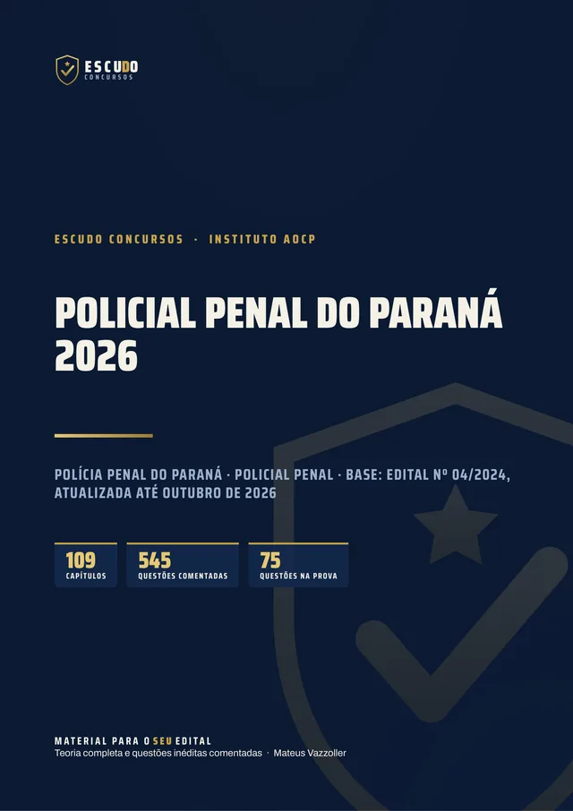
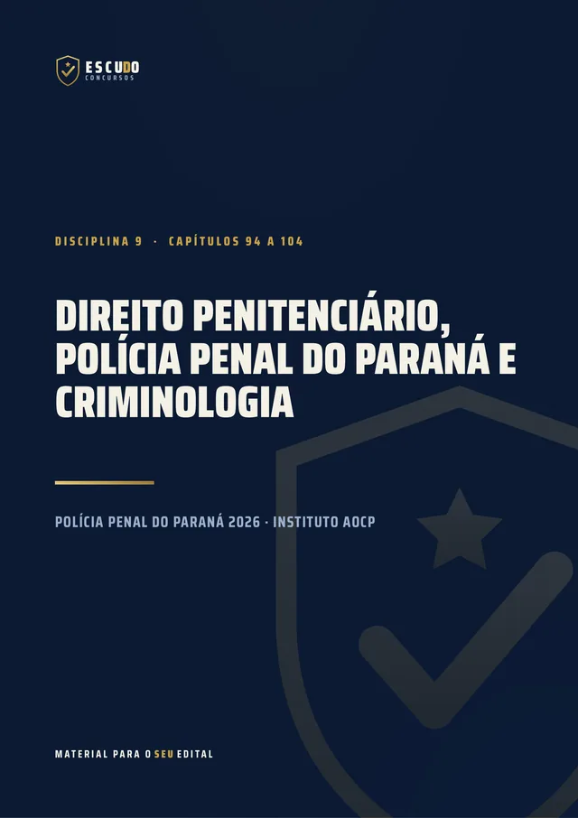
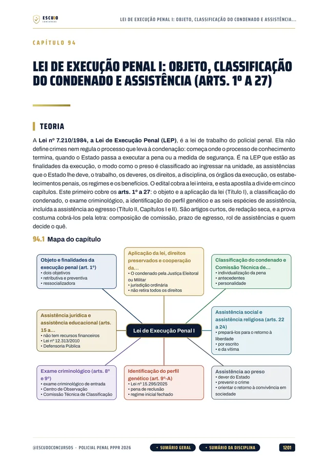
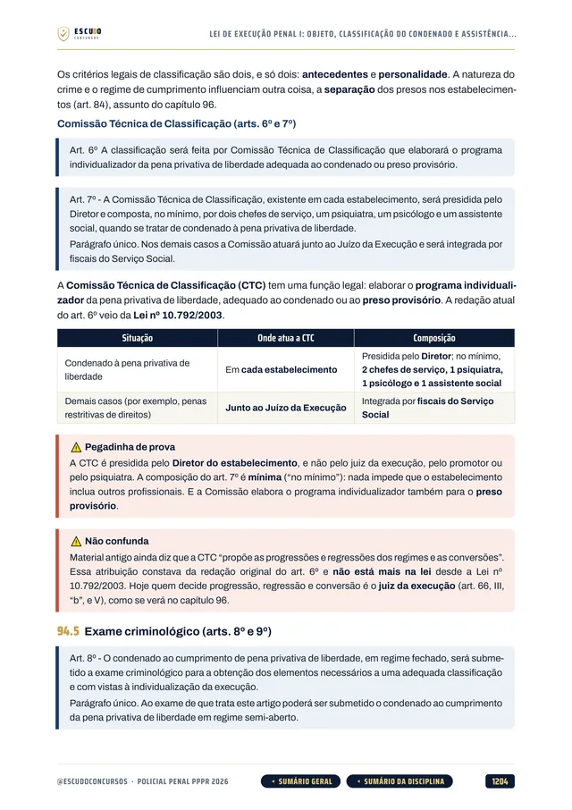
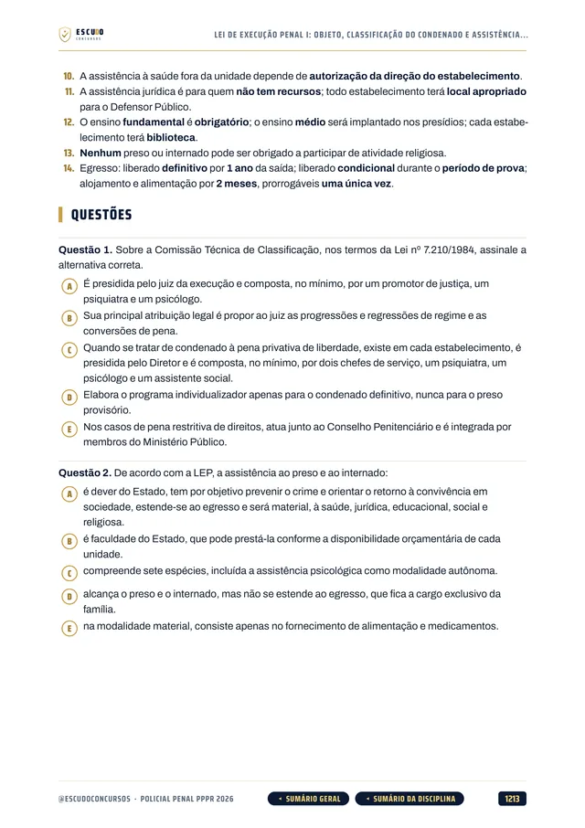
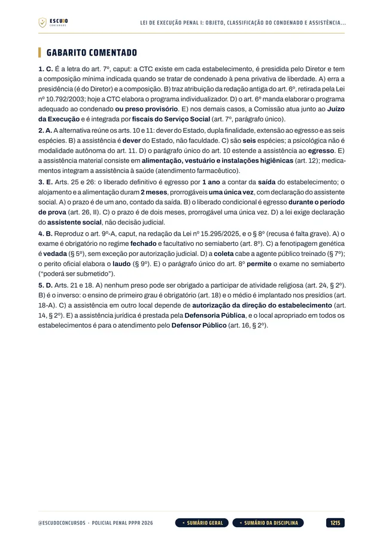

Simulado 1
No meio do caminho
Para medir onde você está e ajustar o estudo enquanto o edital não sai.
30 dias após a compra
Material independente, sem vínculo com a Polícia Penal do Paraná nem com o Instituto AOCP.


545questões
comentadas
ConcursoPolícia Penal/PR2026 · Policial Penal
Briefing
Polícia Penal/PR 2026 · Apostila em PDF
O próximo concurso vai exigir curso superior e exame de aptidão física. O seu material já está com o que mudou depois do edital de 2024? Curso feito pelo programa do último edital, o nº 04/2024 do Instituto AOCP, com a legislação federal e do Paraná conferida em outubro de 2026 e questões de 5 alternativas com gabarito comentado.
de R$ 47 por
R$37
com o cupom PENAL37 até 30/11/2026. Pelo botão, o cupom já vai preenchido.
R$47
Curso completo, com acesso imediato.
Terreno
O concurso
Em outubro de 2026 não há edital novo aberto. A referência para estudar é o último concurso do cargo, o Edital nº 04/2024, do Instituto AOCP: prova objetiva de 75 questões de 5 alternativas, de (A) a (E), em 5 horas, com 25 questões de Conhecimentos Gerais e 50 de Conhecimentos Específicos. O concurso de 2024 pagava subsídio inicial de R$ 4.548,97 e já ganhou duas ampliações de 500 vagas cada (Editais nº 86/2025 e nº 109/2026).
Para passar, era preciso acertar pelo menos 7 questões de Conhecimentos Gerais (3 de Português, 3 de Raciocínio Lógico e 1 de Informática), 25 de Conhecimentos Específicos e fazer 60 dos 100 pontos. Os três requisitos valem ao mesmo tempo.
| Bloco | Disciplinas | Questões |
|---|---|---|
| CG | Conhecimentos Gerais: Língua Portuguesa (10), Raciocínio Lógico Matemático (10) e Informática (5) | 25 |
| CE | Conhecimentos Específicos: Direito Administrativo, Legislação extravagante, Direito Constitucional, Direito Penal, Direito Processual Penal, Direito Penitenciário e Criminologia, e Direitos Humanos | 50 |
| Mínimos: 7 acertos em Conhecimentos Gerais, 25 em Específicos e 60 dos 100 pontos. | 75 |
Atualização
Depois do edital de 2024
LC nº 283/2025: o ingresso passou a exigir curso superior completo em qualquer área e aprovação em exame de aptidão física, de caráter eliminatório. Em 2024 bastava o ensino médio.
Lei nº 23.159/2026: a Lei de Organização Básica da Polícia Penal, que criou o Departamento de Polícia Penal do Estado do Paraná (DEPPEN), com competências, estrutura e prerrogativas do policial penal.
LC nº 293/2026: a carreira passou a ter onze classes, com ingresso na Classe XI.
Protocolo
O formato
Você estuda lendo, no seu ritmo, pela área de membros da Hotmart ou com os arquivos baixados. O curso segue o programa do Edital nº 04/2024, disciplina por disciplina, com a legislação federal e do Paraná conferida no texto oficial vigente em outubro de 2026. Quando sair o edital novo, vale o que ele disser.
Reconhecimento
Páginas reais do PDF
Toque numa página para ver em tamanho maior.





Equipamento
O que você recebe
Curso em PDF organizado em 11 módulos pelas disciplinas do edital, com 1.424 páginas no padrão visual ESCUDO, para ler no computador, no tablet, no celular ou no app da Hotmart. Não há videoaulas.
109 capítulos cobrindo as dez disciplinas da prova: Língua Portuguesa, Raciocínio Lógico Matemático, Informática, Direito Constitucional, Direito Administrativo e Legislação Administrativa do Paraná, Direito Penal, Direito Processual Penal, Legislação Extravagante, Direito Penitenciário e Criminologia, e Direitos Humanos.
545 questões inéditas com 5 alternativas, de (A) a (E), como na prova, todas com gabarito comentado: por que a correta está correta e onde está o erro de cada uma das outras.
Direito Penitenciário em 11 capítulos: Lei de Execução Penal em 5 capítulos, Estatuto Penitenciário do Paraná (Decreto 1.276/1995), Quadro Próprio da Polícia Penal (LC 245/2022, com as LC 283/2025 e 293/2026), Lei 23.159/2026, Conselho da Polícia Penal (Lei 21.404/2023) e Criminologia em 2 capítulos.
Legislação do Paraná no Direito Administrativo: processo administrativo estadual, sindicância, PAD e ajustamento de conduta, e o Estatuto dos Servidores do Paraná (Lei 6.174/1970), mais a Lei de Acesso à Informação e a Lei de Improbidade.
Legislação Extravagante em 13 capítulos: Drogas, Crimes Hediondos, Abuso de Autoridade, Estatuto do Desarmamento e Decreto 11.615/2023, Interceptação Telefônica, Organizações Criminosas, Maria da Penha, Tortura, Crimes Ambientais, ECA, Estatuto da Pessoa Idosa e Pacote Anticrime.
Casos práticos na rotina do sistema prisional ao longo da teoria: custódia, escolta, revista, disciplina, atendimento ao preso e à visita.
Teoria com recursos para memorizar: mapa de cada capítulo, fluxogramas e esquemas, quadros de "pegadinha" e "não confunda", resumo esquematizado e pontos-chave de revisão no fim de cada capítulo.
Navegação clicável: do sumário você vai direto ao capítulo, e volta pelo botão do rodapé.
2 simulados inéditos no formato da prova (75 questões de A a E, na divisão do edital), cada um com caderno de comentários.
Plano de ação
Área de membros
| Módulo | Conteúdo | Liberação |
|---|---|---|
| M0 Comece aqui | Apresentação + capítulo 001 (como é a prova, o que mudou depois de 2024 e como usar o curso). Bônus: PDF completo para baixar e imprimir | Na compra; o PDF completo no 8º dia |
| M1 Língua Portuguesa | Capítulos 002 a 016 | Na compra |
| M2 Raciocínio Lógico Matemático | Capítulos 017 a 029 | Na compra |
| M3 Informática | Capítulos 030 a 037 | Na compra |
| M4 Direito Constitucional | Capítulos 038 a 045 | Na compra |
| M5 Direito Administrativo e Legislação Administrativa do Paraná | Capítulos 046 a 060 | Na compra |
| M6 Direito Penal | Capítulos 061 a 071 | Na compra |
| M7 Direito Processual Penal | Capítulos 072 a 080 | Na compra |
| M8 Legislação Extravagante | Capítulos 081 a 093 | Na compra |
| M9 Direito Penitenciário, Polícia Penal do Paraná e Criminologia | Capítulos 094 a 104 | Na compra |
| M10 Direitos Humanos | Capítulos 105 a 109 | Na compra |
| M11 Simulado 1 | 75 questões no formato da prova, caderno de comentários | 30 dias após a compra |
| M12 Simulado 2 | 75 questões no formato da prova, caderno de comentários | 60 dias após a compra |
Treinamento
Treino no formato da prova
Cada simulado tem 75 questões de A a E, na divisão do edital (25 de Conhecimentos Gerais e 50 de Específicos), com caderno de comentários.
Simulado 1
Para medir onde você está e ajustar o estudo enquanto o edital não sai.
30 dias após a compra
Simulado 2
Para conferir a evolução depois de mais um mês de estudo.
60 dias após a compra
Perfil
Para quem é
Para quem vai prestar o próximo concurso de Policial Penal do Paraná e quer começar agora, pelo programa do último edital, com os Conhecimentos Específicos, que são 50 das 75 questões, cobertos por inteiro.
Proteção
Você tem 7 dias de garantia pela Hotmart. Se não for o que você esperava, pede o reembolso pela própria Hotmart, dentro do prazo.
Instrução
Dúvidas
Não. É um curso 100% em PDF: teoria, questões comentadas e simulados para ler e resolver.
O acesso é imediato depois da confirmação do pagamento, pela área de membros da Hotmart (web ou app). O PDF completo para baixar e imprimir é liberado no 8º dia.
O Simulado 1 é liberado 30 dias após a compra e o Simulado 2, 60 dias após a compra.
O programa de um concurso para o mesmo cargo costuma mudar pouco, e o grosso da prova (LEP, Estatuto Penitenciário, Penal, Processual Penal, Constitucional, Administrativo e legislação extravagante) não depende do edital novo. O curso já traz as leis do Paraná aprovadas depois de 2024. Quando sair o edital, vale o que ele disser.
Pela LC nº 283/2025, sim: o requisito de investidura passou a ser curso superior completo em qualquer área, e entrou o exame de aptidão física eliminatório. Os capítulos 001 e 100 explicam a mudança.
No edital de 2024: prova objetiva de 75 questões de múltipla escolha com cinco alternativas, de (A) a (E), e uma só correta, em 5 horas. Depois vinham avaliação psicológica, investigação social, curso de formação e avaliação médica, todas só eliminatórias. As questões do curso seguem esse formato.
Não. As 545 questões de treino e as dos simulados são inéditas, escritas no formato do edital a partir do programa.
Você tem 7 dias de garantia pela Hotmart. Se não for o que você esperava, pede o reembolso.
Missão
Polícia Penal/PR 2026 · Policial Penal
de R$ 47 por
R$37
com o cupom PENAL37 até 30/11/2026.
R$47
Curso completo, com acesso imediato.
Material para o SEU edital. ESCUDO Concursos.